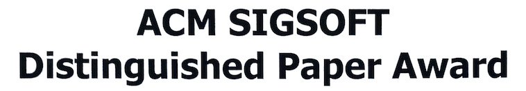
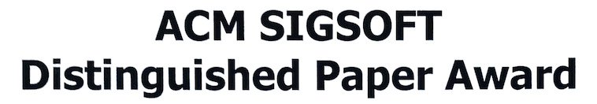

Qingkai (Thomas) Shi
PhD Candidate
Department of Computer Science and Engineering
Hong Kong University of Science and Technology
Email: qingkaishi AT gmail DOT com, qshiaa AT cse DOT ust DOT hk
Research Interests
- System Security
- Programming Language
- Software Testing
- Concurrency
Advisories
- CVE-2017–14739: ImageMagick 7.0.7–4 mishandles failed memory allocation, which allows remote attackers to cause a denial of service.
- CVE-2017–14952: International Components for Unicode (ICU) for C/C++ through 59.1 contains a double free that allows remote attackers to execute arbitrary code.
- CVE-2017–15096: GlusterFS in versions prior to 3.10 contains a null pointer dereference that may cause denial of service.
- CVE-2017–16892: Bftpd 4.6 contains a memory leak which occurs if a mal-crafted sequence of FTP requests are received.
- CVE-2017–1000445: ImageMagick 7.0.7–1 and older version are vulnerable to null pointer dereference in the MagickCore component and might lead to denial of service.
- CVE-2018–20786: libvterm through 0+bzr726, as used in Vim and other products, mishandles certain out-of-memory conditions, leading to a denial of service (application crash), related to screen.c, etc.
Thanks to the Pinpoint project.
Publications
- Gang Fan, Rongxin Wu, Qingkai Shi, Xiao Xiao, Jinguo Zhou, Charles Zhang. SMOKE: Scalable Path-Sensitive Memory Leak Detection for Millions of Lines of Code. In ICSE 2019: the 41st ACM/IEEE International Conference on Software Engineering. Montreal, QC, Canada. May 2019. (ACM SIGSOFT Distinguished Paper Award)
- Qingkai Shi, Xiao Xiao, Rongxin Wu, Jinguo Zhou, Gang Fan, Charles Zhang. Pinpoint: Fast and Precise Sparse Value Flow Analysis for Million Lines of Code. In PLDI 2018: the 39th annual ACM SIGPLAN conference on Programming Language Design and Implementation. Philadelphia, Pennsylvania, United States. June 2018. (Slides) (Artifact Evaluation) (Media)
- Qingkai Shi, Jeff Huang, Zhenyu Chen, Baowen Xu. Verifying Synchronization for Atomicity Violation Fixing. The IEEE Transactions on Software Engineering (IEEE TSE), Vol. 42, No. 3, 2016.
- Qingkai Shi, Zhenyu Chen, Chunrong Fang, Yang Feng, Baowen Xu. Measuring the Diversity of a Test Set with Distance Entropy. The IEEE Transactions on Reliability (IEEE TR), Vol. 65, No. 1, 2016.
View all publications at Google Citations or DBLP.
Projects
- Pinpoint
Pinpoint is an industrial-strength next-generation automated bug finding tool through static analysis and AI. It is built on top of LLVM. It has found more than 50 vulnerabilities in about a dozen of open-source projects, including Apache, MySQL, Firefox, Python, OpenSSL, etc. Some of them have been assigned CVE IDs. This project is being commercialized at Sourcebrella Inc.. For more information, interested readers can refer to our technical papers: <PLDI 2018> <ICSE 2019>.
 

- Canary
Canary is a set of tools built on a unification-based alias analysis. Currently, it contains an order-based record/replay tool, and a trace-based bug detector for concurrent C/C++ programs. It is implemented for C/C++ programs based on LLVM. This project currently is used in the Sourcebrella Inc. for vulnerability detection.
- Swan
Swan is a prototype tool for verifying whether an atomicity violation is fixed sufficiently or not. It analyzes a dynamic buggy trace with fix (i.e., synchronization) information. It does not require developers should fully understand the bugs before fixing, thus being more practical. It is implemented for Java programs based on Soot. The technical paper has been accepted by IEEE TSE.
{kind=link}
Teaching Experiences
- TA for COMP4111: Software Engineering Practices (Fall 2016, Spring 2018)
- TA for COMP3111/3111H: Software Engineering (Fall 2018)
Honors
- ACM SIGSOFT Distinguished Paper Award
- Hong Kong Phd Fellowship
- China National Scholarship
Misc
- Blog: Qingkai Shi, 2017/10/06, A double-free vulnerability in International Components for Unicode (ICU)
- Blog: Qingkai Shi, 2017/07/31, Use-after-free vulnerabilities in MySQL
- Reading (Security)